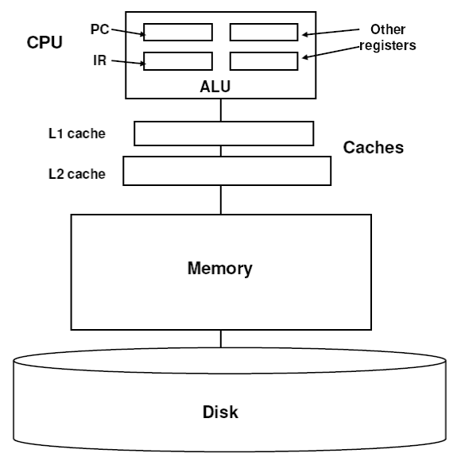
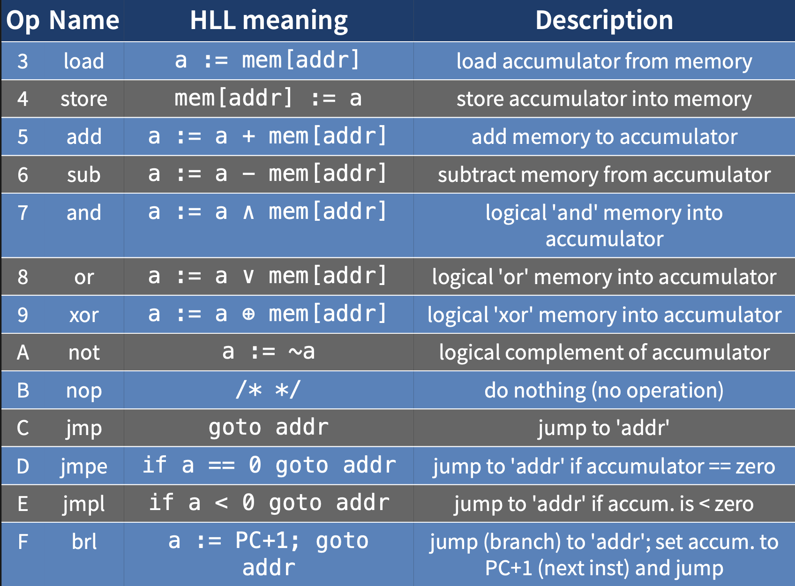

3 IBCM (Machine Language)
3.1 Introduction
3.1.1 Assembly Language
- Machine language
- Instructions represented as patterns of bits (0s and 1s) that can be understood and processed by a central processing unit (CPU)
- Program stored in main memoryf
- Assembly language
- Human-readable notation for the machine language used to control a specific computer architecture
- Assembler translates to bits
3.1.2 Why learn assembly language?
- Machine designers
- Compiler writers
- Programmers (especially for OSes)
- Assembly language programmers
- Most importantly: helps you understand how computers compute
3.1.3 Memory Hierarchy, part 1

Memory Hierarchy
- CPU registers
- 1 access per CPU cycle
- \(3 \times 10^9\) accesses per second
- 1 Kb total storage
- Cache
- SDRAM: 10 nanoseconds
- \(10^8\) accesses per second
- Multiple levels possible
- Higher levels are bigger and slower
- 1 Mb total storage
3.1.4 Memory Hierarchy, Part 2
- Main memory
- DRAM: 60 nanoseconds
- \(2 \times 10^7\) accesses per second
- Limited by bus speeds
- 1 gigabyte total storage
- Disk
- HDD speeds: 5 milliseconds
- 200 accesses per second
- 1 terabyte total storage
3.1.5 Fetch Execute Cycle
while(power is on) {
IR := memory[PC]
Increment PC by length of instruction
execute instruction in IR
}- PC = program counter
- IR = instruction register
3.1.6 Assembly Language Instructions
- x86
- Explicit use of registers
add eax, ebx
add ecx, 1- IBCM
- Implied use of accumulator
load 100
add 200
store 3003.2 IBCM Description
3.2.1 Running IBCM Programs
- Online IBCM simulator
- Write program as text file, load into website
- This program will hang your browser if it gets stuck in an infinite loop, due to how web browsers (don’t) handle Javascript threads and polling of web pages
3.2.2 IBCM Machine Description: CPU
- Single accumulator
- 16 bits
- Special purpose registers
- IR: instruction register
- Stores bits which encode instruction
- PC: program counter
- Stores an address of an instruction
- IR: instruction register
3.2.3 IBCM Machine: Memory
- 4096 16-bit words
- Word
- “chunk size” or addressable unit
- All initialized to zero initially
- Unlike C/C++
- All spots go from 0 to fff, as 4096 = \(2^{12}\)
- Word
3.2.4 IBCM instruction types
- Halt
- Opcode is 0
- I/O
- Opcode is 1
- next 2 bits specify I/O type
- Shifts
- Opcode is 2
- next 2 bits specify shift type
- last 4 bits specify shift amount
- Others
- Opcode is 3 to F (15)
- Last 12 bits specify the address for the instruction
- The arithmetic, memory, and control instructions
3.2.5 Halt
- The opcode (bits 15 down to 12) is zero
- It doesn’t matter what the next 12 bits are
- It halts the IBCM!
3.2.6 Input and output
- The opcode (bits 15 down to 12) is 1
- Next two bits specify I/O type:
- Bit 11 specifies input (0) or output (1)
- Bit 10 specifies hex word (0) or ascii (1)
- Combinations:
- 00: read hex word from keyboard
- 01: read ascii character (into acc bits 7-0)
- 10: write hex word to screen
- 11: write ascii character (from acc bits 7-0)
3.2.7 Shifts
- The opcode (bits 15 down to 12) is 2
- Next two bits specify shift type:
- Bit 11 specifies shift (0) or rotate (1)
- Shift: add new digits, shift everything to a direction
- Rotate: wrap the digits around to the end
- Bit 10 specifies direction: left (0) or right (1)
- Bit 11 specifies shift (0) or rotate (1)
- Consider the bits [0000] [1111] [0000] [1111] and a 3-bit shift/rotation (bold is new digits added):
- 00: shift left: 0][111 1][000 0][111 1]000
- 01: shift right: 000[0 000][1 111][0 000][1
- 10: rotate left: 0][111 1][000 0][111 1][000
- 11: rotate right: 111][0 000][1 111][0 000][1
3.2.8 Other Instructions
- Opcode (bits 15 down to 12) varies from 3 to F (15)
- Next 12 bits specifies the address 
3.2.9 Labels
- We often need to jump around our code
- For this we use labels in assembly language
- These are translated into absolute memory addresses later by assembler
- We don’t have an assembler in IBCM, so we will have to translate them ourselves
start readH
loop load n
xit load s3.2.10 Declaring variables
- You use the
dwopcode- It stands for Declare Word, perhaps
- And you need to give it a label, so you can reference it in assembly language program
- Example:
n dw 0declares a spot with label ‘n’ to have value 0load nwill load the value stored in that spot in memory
3.2.11 Sample Program
- Address 000
- Contents:
3000 - Command:
load mem[0] - Load the number in memory 0:
3000
- Contents:
- Address 001
- Contents:
5000 - Command:
add mem[0] - Add number in memory 0 to the number we are working with (accumulator)
- 3000 + 3000 =
6000
- 3000 + 3000 =
- Contents:
- Address 002
- Contents:
6001 - Command:
sub mem[1] - Subtract accumulator with what is in memory 1
- 6000 - 5000 =
1000
- 6000 - 5000 =
- Contents:
- Address 003
- Contents:
8003 - Command:
or mem[3] - OR accumulator and the contents of this memory address
0x1000 = 0001 0000 0000 00000x8003 = 1000 0000 0000 0011- OR these two values:
1001 0000 0000 0011 = 0x9003
- Contents:
- Address 004
- Contents:
a000 - Command:
not - Change all 1s to 0s, and all 0s to 1s
0110 1111 1111 1100 = 0x6ffc
- Contents:
- Address 005
- Contents:
4000 - Command:
store mem[0] - Write
0x6ffcinto memory
- Contents:
- Address 006
- Contents:
f000 - Command:
brl mem[0] - Store the address of the next instruction in the accumulator (007) and jump to address 000
- Contents:
3.3 Writing IBCM Code
- Write high level pseudo-code
for ( i = 1; i < max; i++ ) ...- Translate into IBCM assembly instructions
load one
store i- Test code by hand
- Step through the code
- Encode into machine code
3016
4005- Load machine code into simulator and run
3.3.1 Simulator
- Leave “load all of memory” unchecked as no programs in this class will be large enough to fill
- Buttons
- Run
- Run to finish
- Step
- Run next step
- Reset
- Go back to start, but do not modify any values in memory
- Revert
- Revert values to back when we first loaded file
- Run
3.3.2 IBCM code to compute a sum
- Compute the sum of integers 1 through \(n\), where \(n\) is to be read from the keyboard
- Resulting sum is to be printed to the screen
- Half after printing the sum
- Source code: summation.ibcm
- Pseudocode:
read n;
i = 1; // index in the array
s = 0; // ongoing sum
while (i <= n) {
s += i;
i += 1;
}
print s;- Given a number n, finding \(\sum_{i=1}^n x_i\)
3.3.3 IBCM summation program: part 1
mem locn label op addr comments
C00A 000 jmp start skip around the vars
0000 001 i dw 0 int i
0000 002 s dw 0 int s
0000 003 n dw 0 int n
0001 004 one dw 1
0000 005 zero dw 0
...
1000 00A start readH read n
4003 00B store n
3004 00C load one i = 1
4001 00D store i
3005 00E load zero s = 0
4002 00F store s- Note that the top line isn’t in the actual program: there cannot be any blank lines
- We have 5 variables
isnonezero
- No way to add a constant to a value, so we created the variables
oneandzeroto be able to add dw= declare wordC00A- Unconditional jump
Cmeans jump- Jump to location
00A
1000readH= read hex (read n)
4003- Store what is in 3:
n
- Store what is in 3:
3004- Load what is on location 4:
one
- Load what is on location 4:
4001- Store what is loaded (
one) intoi i = 1
- Store what is loaded (
- Same thing for
3005and4002- Load value of
zero - Store
zerointos
- Load value of
3.3.4 IBCM summation program: part 2
mem locn label op addr comments
3003 010 loop load n if (i > n) goto xit
6001 011 sub i
E01A 012 jmpl xit
3002 013 load s s += i
5001 014 add i
4002 015 store s
3001 016 load i i += 1
5004 017 add one
4001 018 store i
C010 019 jmp loop goto loop
3002 01A xit load s print s
1800 01B printH
0000 01C halt halt- We cannot compare
iandndirectly- We can instead subtract
ifromn- If negative, jump to
xit
- If negative, jump to
jmpl- Jump if less than 0
- We can instead subtract
sis the sum- Add
itos - Add
onetoi jmpback into the loop line
- Add
3.3.5 How would we code this:
if (B == 0)
S1;
else
S2;load B
jmpe S1
jmp S2
S1: ... (if)
jmp done
S2: ... (else)
done3.3.6 IBCM code to sum elements in an array
- Compute the sum of the elements of an array, print the sum, then halt
- Address of the first element of the array and the size of the array are to be read in from the keyboard
- Source code: array-summation.ibcm
- Pseudocode:
read a; // array base address
read n; // array size
i = 0; // index in the array
s = 0; // ongoing sum
while (i < n) {
s += a[i];
i += 1;
}
print s;3.3.7 Array Summation: initialization and halting
mem locn label op addr comments
C00A 000 jmp start skip around the vars
0000 001 i dw 0 int i
0000 002 s dw 0 int s
0000 003 a dw 0 int a[]
0000 004 n dw 0
0000 005 zero dw 0
0001 006 one dw 1
5000 007 adit dw 5000
... leave space for changes
1000 00A start readH read array address
4003 00B store a
1000 00C readH read array size
4004 00D store n
3005 00E load zero i = 0; s = 0;
4001 00F store i
4002 010 store s
...
3002 020 xit load s print s
1800 021 printH
0000 022 halt3.3.8 Array Summation: the inner loop
mem locn label op addr comments
...
3004 011 loop load n if (i >= N) goto xit
6001 012 sub i
E020 013 jmpl xit
D020 014 jmpe xit
3007 015 load adit form inst to add a[i]
5003 016 add a
5001 017 add i i = 2
401A 018 store doit plant inst into code
3002 019 load s s += a[i]
0000 01A doit dw 0 executes from locn 018
4002 01B store s
3001 01C load i i += 1
5006 01D add one
4001 01E store i
C011 01F jmp loop goto loop
...- jmpl = jump if less than
- jmpe = jump if equal to
3.4 Conclusions
3.4.1 Notes
- IBCM’s memory
- Array of “words” / chunks of data
- Data can be the program
- Program can be the data
- IBCM is Turing-complete
- Any program expressible in any programming language can be expressed in IBCM
- (with the standard exception about the whole limited-memory thing)
- Any program expressible in any programming language can be expressed in IBCM
3.4.2 IBCM tips/reminders
- Use the programming steps
- Pseudocode
- Assembly code
- Comment your code clearly!
- Trace the assembly
- Translate to machine code last
- Cannot have blank lines or comment lines
3.4.3 Use the simulators to debug your code
- Online simulator
- Cannot terminate an infinite loop easily
- Unusual behavior?
- Is the program logic correct?
- Condition specified incorrectly/inaccurately?
- Is the machine code correct?
- Opcode? Address?
- Is the program logic correct?
3.4.4 What’s missing from IBCM?
- Integer multiply and divide
- Floating point support
- A bigger address space
- More than 1 user register
- What else?
3.4.5 Emulating IBCM in C++
- How might one write software to emulate an IBCM machine in C++?
- A switch statement with 16 cases, perhaps
- But how to decode the instructions?
3.4.6 How to decode the parts of an instruction
- Let’s assume we had to write a C++ program that could extract the parts of an IBCM instruction
- How to do it?
- Assume the instruction is in an unsigned int x
unsigned int opcode = (x >> 12) & 0x000f unsigned int ioshiftop = (x >> 10) & 0x0003 unsigned int address = x & 0x0fff unsigned int shiftcount = x & 0x000f
3.4.7 What about encoding?
- Assume we have (unsigned ints) opcode, ioshiftop and shiftcount
unsigned int instruction = (opcode << 12) |
(ioshiftop << 10) | shiftcount- What a pain this all is!
3.4.8 A data structure to make it easier
union ibcm_instruction {
#ifdef BIG_ENDIAN // the IBCM is big endian
struct { unsigned char high, low; } bytes;
#else
#ifdef LITTLE_ENDIAN
struct { unsigned char low, high; } bytes;
#else
#error Must define BIG_ENDIAN or LITTLE_ENDIAN
#endif // LITTLE_ENDIAN
#endif // BIG_ENDIAN
struct { unsigned int op:4, unused:12; } halt;
struct { unsigned int op:4, ioopt:2, unused:10 } io;
struct { unsigned int op:4, shiftop: 2,
unused:5, shiftcount:5; } shifts;
struct { unsigned int op:4, address:12; } others;
};3.4.9 Using that data structure
// read in instruction into unsigned chars a and b
ibcm_instruction inst;
inst.high = a;
inst.low = b;
if ( inst.halt.op == 0 ) { // halt
// ...
} else if ( inst.io.op == 1 ) { // io
cout << inst.io.ioopt << endl;
} else if ( inst.shifts.op == 2 ) { // shifts
cout << inst.shifts.shiftop << endl;
cout << inst.shifts.shiftcount << endl;
} else { // all others
cout << inst.others.address << endl;
}